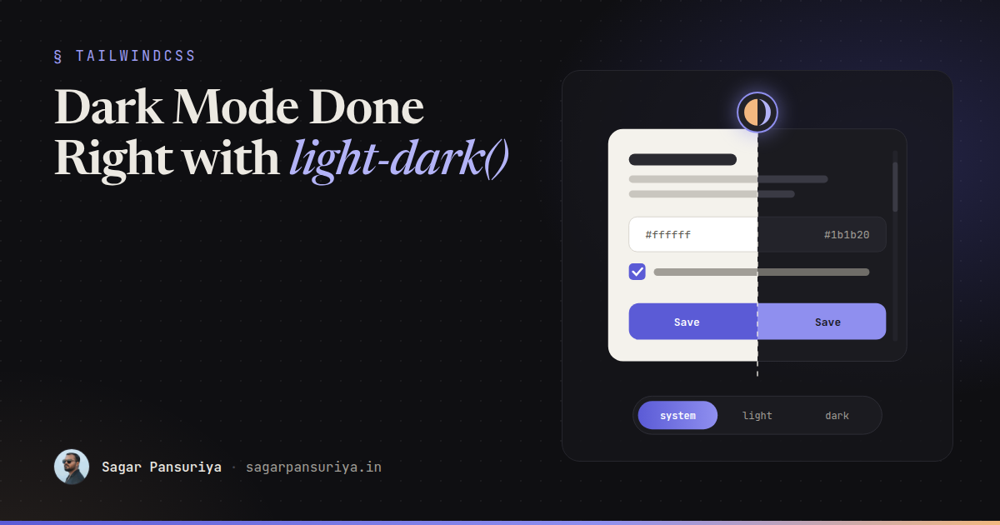
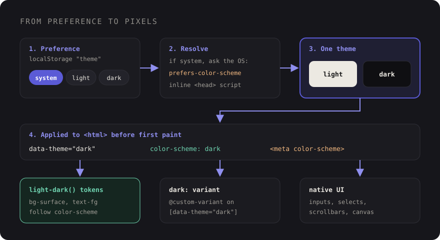

Dark Mode Done Right: color-scheme, light-dark() and a Toggle That Doesn't Flash


You've probably shipped a dark mode that looked great in the screenshot and fell apart in real use. The page flashes white on every reload. Checkboxes and select menus are still glaring white. The scrollbar is bright grey on a near-black page. The logo, a transparent PNG with dark text, has vanished. And the toggle forgets its setting whenever you open a new tab.
None of these are hard to fix; they're just easy to miss, because dark mode is really three separate problems: telling the browser which schemes you support, switching your own colours, and remembering the user's choice. Modern CSS handles the first two far better than the old "duplicate every colour in a .dark block" approach. This post walks through all three, then the details that make it feel finished: form controls, images, and testing.
If you want the token architecture side (primitive vs semantic colours, multiple brands), I covered that in design tokens in Tailwind v4. Here the focus is the mechanics of the theme switch itself.
Step one: color-scheme tells the browser
Before touching your own colours, tell the browser your page supports both schemes:
<!-- in <head>, before any stylesheet -->
<meta name="color-scheme" content="light dark">:root {
color-scheme: light dark;
}This one property does a surprising amount. When the used scheme is dark, the browser switches its own defaults: the page canvas behind your content, default text colour, native form controls, scrollbars, and system colours like Canvas and CanvasText. That's why the checkboxes stay white in a lot of hand-rolled dark modes. Nobody told the browser.
The meta tag matters because it's read before your CSS arrives. Without it, a dark-mode user can see a white canvas for a moment while the stylesheet loads.
Step two: light-dark() switches your colours
The light-dark() function takes two colours and returns the first when the element's used colour scheme is light and the second when it's dark. It's been supported across all major browsers since 2024. The important detail: it only works when color-scheme is set, which is one more reason step one comes first.
:root {
color-scheme: light dark;
--surface: light-dark(#ffffff, oklch(0.18 0.01 270));
--surface-raised: light-dark(oklch(0.97 0 0), oklch(0.23 0.01 270));
--fg: light-dark(oklch(0.2 0 0), oklch(0.93 0.01 90));
--fg-muted: light-dark(oklch(0.45 0 0), oklch(0.7 0.01 90));
--line: light-dark(oklch(0.9 0 0), oklch(0.3 0.01 270));
--primary: light-dark(oklch(0.5 0.2 275), oklch(0.72 0.14 275));
}
body {
background: var(--surface);
color: var(--fg);
}Each token is defined once, with both values side by side. No second block to keep in sync, no forgetting to add the dark value for a new token. And because unregistered custom properties are substituted where they're used, light-dark() resolves against the colour scheme of the element that uses the variable, not the root. Set color-scheme: dark on a footer and everything inside it goes dark, even when the rest of the page is light.
In Tailwind v4, put these in @theme (as --color-surface and so on) and you get bg-surface, text-fg and friends that switch automatically, without writing a single dark: class.
Step three: the user's choice, without a flash
With only the above, your site follows the operating system via prefers-color-scheme. That's a perfectly good default. Most people also expect a toggle, and a good one has three states: system, light and dark. Once someone picks light or dark, the site should respect that over the OS until they switch back to system.
The neat trick with light-dark() is that forcing a theme is just forcing color-scheme:
:root[data-theme="light"] { color-scheme: light; }
:root[data-theme="dark"] { color-scheme: dark; }Every token, every native control and the scrollbar follow along. You don't restate a single colour.

The inline head script
The flash of the wrong theme happens when the page renders before your JavaScript has applied the saved choice. The fix is a tiny inline, blocking script in the <head>. It must not be deferred, bundled or loaded as a module, because those all run after first paint.
<script>
(() => {
let pref = 'system';
try { pref = localStorage.getItem('theme') || 'system'; } catch (e) {}
const dark = pref === 'dark' ||
(pref === 'system' && matchMedia('(prefers-color-scheme: dark)').matches);
const theme = dark ? 'dark' : 'light';
document.documentElement.dataset.theme = theme;
document.querySelector('meta[name="color-scheme"]')?.setAttribute('content', theme);
})();
</script>Three details earn their place here. The try block covers browsers or privacy modes where localStorage throws. The script resolves "system" to a concrete theme, so everything downstream only ever sees light or dark. And it updates the meta tag too, so a user who chose light on a dark OS doesn't get a dark canvas before the CSS loads. Put it after the meta tag and before your stylesheet link.
The toggle itself
The toggle writes the preference, re-applies it, and listens for OS changes while the preference is "system". Here's an Alpine version; the logic is the same in any framework:
// resources/js/theme.js
const media = matchMedia('(prefers-color-scheme: dark)');
export function applyTheme(pref) {
const theme = pref === 'dark' || (pref === 'system' && media.matches) ? 'dark' : 'light';
document.documentElement.dataset.theme = theme;
document.querySelector('meta[name="color-scheme"]')?.setAttribute('content', theme);
}
Alpine.data('themeSwitcher', () => ({
pref: localStorage.getItem('theme') || 'system',
init() {
media.addEventListener('change', () => {
if (this.pref === 'system') applyTheme('system');
});
},
set(pref) {
this.pref = pref;
pref === 'system' ? localStorage.removeItem('theme') : localStorage.setItem('theme', pref);
applyTheme(pref);
},
}));<div x-data="themeSwitcher" role="radiogroup" aria-label="Colour theme" class="flex gap-1">
<template x-for="option in ['system', 'light', 'dark']">
<button type="button" role="radio"
:aria-checked="pref === option"
@click="set(option)"
x-text="option"
class="rounded px-3 py-1 capitalize aria-checked:bg-surface-raised"></button>
</template>
</div>Because the preference lives in localStorage, every tab picks it up on the next page load. If you need the choice to follow a logged-in user across devices, save it to their profile too and render the data-theme attribute from the server, keeping the inline script as the fallback for guests.
Tailwind v4: pointing dark: at your attribute
Out of the box, Tailwind v4's dark: variant uses the prefers-color-scheme media query, so it ignores your toggle. Redefine it in your main CSS file with @custom-variant, using either a class or the data attribute:
@import "tailwindcss";
/* class strategy: <html class="dark"> */
@custom-variant dark (&:where(.dark, .dark *));
/* or data-attribute strategy, matching the script above */
@custom-variant dark (&:where([data-theme="dark"], [data-theme="dark"] *));Pick one. Since our script always resolves to a concrete data-theme, the attribute version covers system, light and dark alike.
My advice is to treat dark: as the exception. If your components use semantic tokens with light-dark(), you'll only need the variant for one-offs: an illustration that needs lower opacity, a shadow that should become a border. Hundreds of dark:bg-… classes scattered through Blade files are a sign the tokens are missing.
One caveat: the variant depends on the attribute, and the attribute depends on JavaScript. Tokens built on color-scheme still follow the OS when JavaScript is off, and dark: classes don't. Another reason to keep most of the theme in tokens.
Form controls and scrollbars
color-scheme already gives you dark native inputs, selects, date pickers and scrollbars. A few extras finish the job:
:root {
accent-color: var(--primary); /* checkboxes, radios, range, progress */
scrollbar-color: var(--line) transparent; /* thumb and track, where supported */
}
input, select, textarea {
background-color: var(--surface);
color: var(--fg);
border-color: var(--line);
}Watch out for controls you've fully restyled with appearance: none. They no longer get the browser's dark defaults, so every state (hover, focus, disabled, checked) needs your tokens. And check ::placeholder contrast in both themes; it's often the first thing to fail.
Images and SVG
- Icons: inline SVG with
fill="currentColor"orstroke="currentColor"follows your text colour automatically. This covers most UI icons. - Logos and illustrations: provide a dark version. With a manual toggle, swap with CSS (
dark:hiddenon one image,hidden dark:blockon the other). A<picture>withmedia="(prefers-color-scheme: dark)"only follows the OS, not your toggle. - Transparent PNGs with dark content: either export a light version or give them a light backing plate. They quietly disappear otherwise.
- Photos: never invert them. At most, dim very bright ones slightly (
dark:brightness-90) so they don't glare against a dark page. - Shadows: dark shadows barely show on dark surfaces. Express elevation with a lighter surface or a subtle border instead.
Testing both themes
Dark mode breaks silently, because most of the team works in one theme. Build checking the other into your routine:
- DevTools: the Rendering panel in Chrome can emulate
prefers-color-scheme. Use it to check the "system" path without changing your OS setting. - Reload test: for each of system, light and dark, reload a few pages, including on a throttled connection. Any flash means the inline script is missing, late, or out of sync with the toggle.
- Contrast: run your accessibility checker in both themes. Muted text and placeholders that pass in light often fail in dark.
- Automated screenshots: if you use Playwright, its
colorSchemeoption emulates the media query, so you can run visual tests for both schemes. For the manual toggle, set thethemekey inlocalStoragebefore the page loads. - JavaScript off: the page should still follow the OS and stay readable.
A dark mode checklist
<meta name="color-scheme" content="light dark">in the head, andcolor-scheme: light darkon:root.- Colours defined once as tokens with
light-dark(). - Manual choice applied by forcing
color-schemeviadata-theme. - Three-state toggle (system, light, dark) persisted in
localStorage, following OS changes while on system. - Inline, blocking head script that applies the theme and updates the meta tag before first paint.
- Tailwind's
dark:redefined with@custom-variant, and used sparingly. accent-colorset; restyled controls given tokens for every state.- Icons use
currentColor; logos have dark versions; photos are never inverted. - Both themes checked for contrast, flashes and visual regressions.
Get the three layers right and dark mode stops being a pile of overrides. It's one property telling the browser what you support, one set of tokens, and a dozen lines of script to remember what the user picked.
Discussion